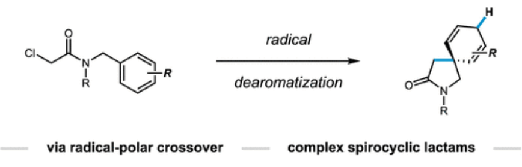

Education
University of West Georgia
Department of Computing and Math, Online
Masters in Computer Science | Projected May 2024
Emory University
Department of Chemistry, Atlanta GA
Masters in Organic Chemistry | Dec 2021
New College of Florida
Department of Natural Sciences, Sarasota FL
Bachelors in Chemistry | May 2019
Research Experience
Emory University
Photocatalytic dearomatization by reductive radical polar crossover.
New College of FLorida
Synthesized novel antibiotic candidates as competitive inhibitors of alanine racemase.
University of Maryland, Baltimore County
Synthesized a novel fluorescent probe and measured intracellular viscosity.
Florida State University
Synthesized multiple emission organic fluorophores
Publications

Triple Emission of 5`-(para-R-Phenylene)vinylene-2-(2`-hydroxyphenyl)benzoxazole (PVHBO). Part I: Dual Emission from the Neutral Species Quinton J. Meisner, Joseph J. M. Hurley, Peijun Guo, Anna R. Blood, Richard D. Schaller, David J. Gosztola, Gary P. Wiederrecht, and Lei Zhu J. Phys. Chem. A, 2022, 126, 7, 1033-1061
Dearomatization of Unactivated Arenes via Catalytic Hydroalkylation Kelly A. McDaniel, Anna R. Blood, Gavin C. Smith, Nathan T. Jui ACS Catalysis, 2021, 11, 4968-4972